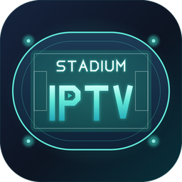

Stadium IPTVPolitique de confidentialité
Dernière mise à jour : 18 novembre 2026 · English version
Stadium IPTV est un lecteur vidéo pour Mac et iPhone. L'application ne collecte aucune donnée personnelle, n'en stocke aucune sur nos serveurs et n'en vend aucune.
Données gardées sur votre appareil
Les adresses de vos sources, vos identifiants (rangés dans le Trousseau d'Apple), vos favoris, dossiers, positions de lecture et réglages restent sur votre appareil. Ils sont supprimés avec l'application, ou depuis ses réglages.
Connexions réseau
L'application se connecte uniquement aux serveurs que vous ajoutez vous-même (fournisseur IPTV, serveur Jellyfin) pour charger les chaînes, le guide des programmes et les vidéos. Ces services ont leur propre politique de confidentialité.
Achats
Les achats de la version Pro sont traités par Apple. Nous ne recevons aucune information de paiement.
Statistiques et publicité
L'application n'utilise aucun outil de mesure d'audience, aucun traceur et aucune publicité.
Contenus
Stadium IPTV ne fournit aucune chaîne ni aucun contenu. Vous êtes responsable des sources que vous ajoutez.
Contact
Pour toute question : stadiumappdev@gmail.com